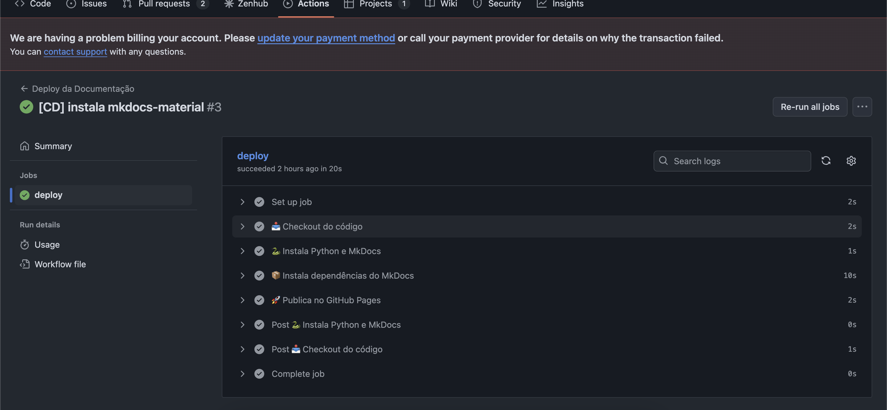

Workflows de CI/CD
Este documento descreve os dois workflows automatizados configurados no repositório GitHub do projeto: um para testes e cobertura do compilador e outro para deploy da documentação no GitHub Pages.
1. CI Compilador (.github/workflows/ci.yml)
Esse workflow é executado a cada push para qualquer branch. Ele garante que o compilador está funcionando corretamente e que os testes foram executados com sucesso.
Etapas:
Executa o workflow para qualquer branch modificada.
Passos executados:

-
Checkout do código
-
Instalação de dependências
-
Execução dos testes com cobertura

- Publicação dos artefatos
Esses artefatos ficam disponíveis na aba "Actions" do GitHub como evidência da execução automatizada.
2. Deploy da Documentação (.github/workflows/deploy.yml)
Este workflow é responsável por gerar e publicar a documentação do projeto automaticamente no GitHub Pages sempre que houver um push para a branch main.

Acionamento:
Permissão:
Essa permissão é necessária para permitir que o MkDocs publique diretamente no branch gh-pages.
Etapas:
-
Checkout do código
-
Instalação do Python e MkDocs
-
Deploy automático no GitHub Pages
Benefícios Gerais dos Workflows
- Automação completa da verificação e entrega contínua
- Feedback imediato sobre quebras e regressões
- Documentação sempre atualizada
- Armazenamento automático de artefatos úteis (binários, cobertura)
Esses workflows promovem um ciclo de desenvolvimento seguro, confiável e padronizado para toda a equipe.